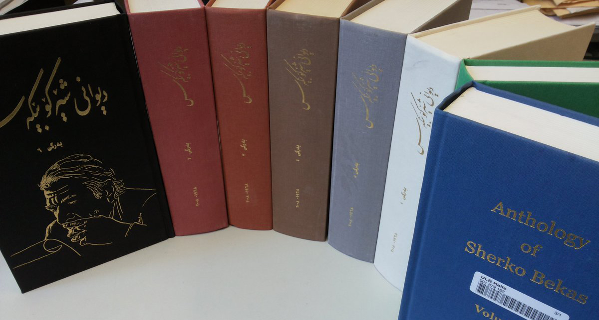
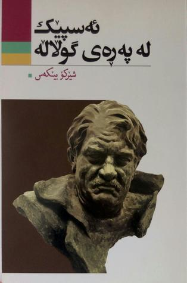
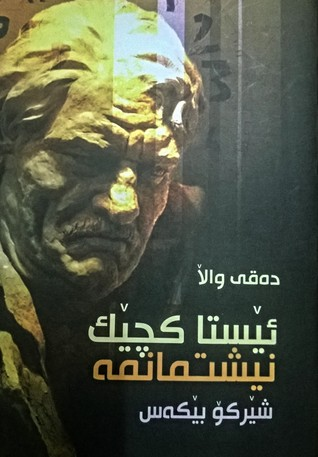
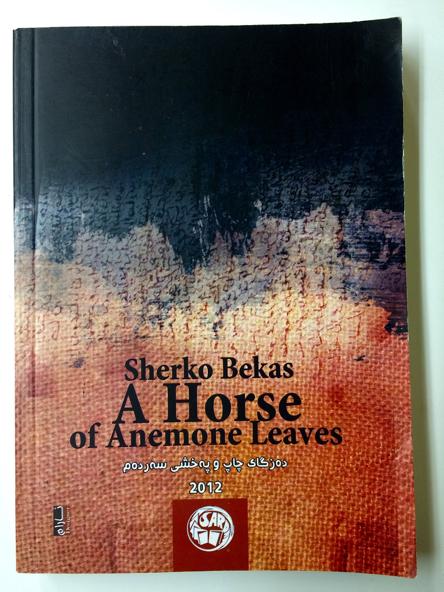
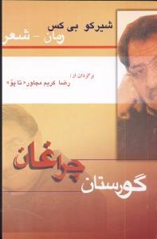
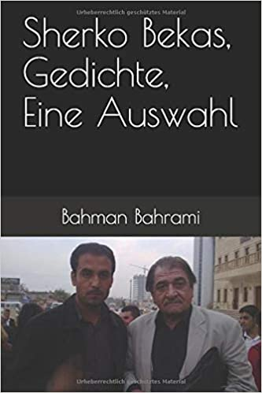

Sherko bekas's Books
- Tirîfey Helbest, Salman al-Azami Publishers, Iraq, 1968.
- Kawey Asinger: Dastanêkî honrawayî sar shanoye le no tabloda, Saydiyan Publishers, Mahabad, Iran, 1971.
- Marâyâ saghírah, illustrerad by Fuad Ali, 125 pp., Al-ahâli Publishers, Damascus, Syria, 1988.
- Dall : çîrokî şê'r, Poem, 44 pp., Apec Publishers, Sweden, 1989. ISBN 91-87730-03-0
- Derbendî Pepûle: A Long Poem, 228 pp., Apec Publishers, Sweden, 1991.
- Små speglar: dikter 1978–1989. – Norsborg : Publ. House of Kurdistan, 1989. – 108 s. – ISBN 91-87096-05-6
- Les petits miroirs : poèmes, Translation of his poems in French, by Kamal Maarof, Preface by Guillevic, 95 pp., L'Harmattan Publishers, Paris, 1995. ISBN 2-7384-2059-1
- Dîwanî Şêrko Bêkes, Collection of Poems, vol. I, 992 pp., Sara Publishers, Stockholm, 1990.
- Dîwanî Şêrko Bêkes, Collection of Poems, vol. II, 843 pp., Sara Publishers, Stockholm, 1992.
- Dîwanî Şêrko Bêkes, Collection of Poems, vol. III, 551 pp., Apec Publishers, Stockholm, 1995. ISBN 91-87730-74-X
- Gulbijêrek ji helbestên (Selected Poems), 110 pp., Apec Publishers, 1991. ISBN 91-87730-28-6
- Geheimnisse der Nacht pflücken : Gedichte / aus dem Kurdischen von Reingard und Shirwan Mirza und Renate Saljoghi, 95 pp., Unionsverlag Publishers, Zürich, 1993. ISBN 3-293-00187-4
- Mêrgî zam-, mêrgî hetaw, 182 pp., Kurdistans folkförb., Stockholm, 1996. ISBN 91-972467-2-7
- Xaç û mar û roj-jimêrî şa'êrê, A poetic novel, 374 pp., Apec Publishers, Stockholm, 1997. ISBN 91-89014-20-0
- The secret diary of a rose: a journey through poetic Kurdistan, Translated into English by Reingard and Shirwan Mirza ; revised by Luise von Flotow, Ashti Bibani, 1997.
- Bonname : Şê'r. Binkey Edeb û Rûnakbîrî Gelawêj, Sulaimaniya, Iraqi Kurdistan 1998.
- Çirakanî ser helemût : pexşan, Sardam Publishers, Iraqi Kurdistan, 1999.
- Piyawî la-darsew : Şê'r. Sulaimaniya, Iraqi Kurdistan, 2000.
- Qesîdey Rengdan, Xak Publishing Center, Sulaimaniya, Iraqi Kurdistan, 2001.
- Ezmûn: 1985–2000, Edited by Yasin Umar, Sardam Publishers, Sulaimaniya, Iraqi Kurdistan, 2001.
- Jîn û Baran, Poem. Silêmanî Library, 2001.
- Ji nav Şêrên min. Avesta Publishers, Istanbul, Turkey, 2001. ISBN 975-7112-31-3.
- Xom ew wextey balindem!, 237 pp., Sardam Publishers, Sulaimaniya, Iraqi Kurdistan, 2002.
- Kukuxîtya bizêweke, Children's poetry, Sardam Publishers, Sulaimaniya, 2003.
- 
- 
- 
- 
- 